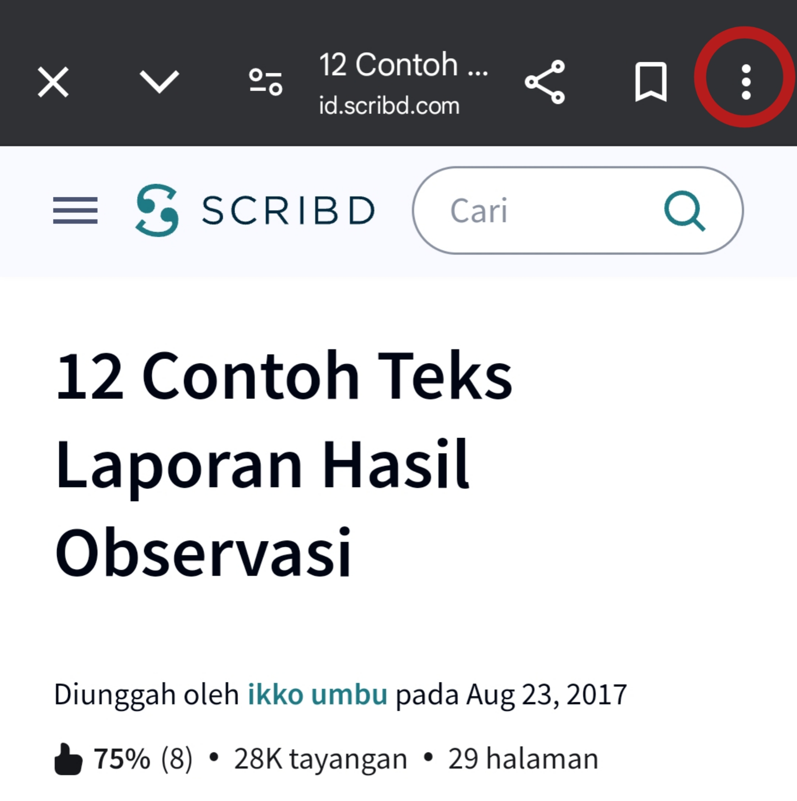
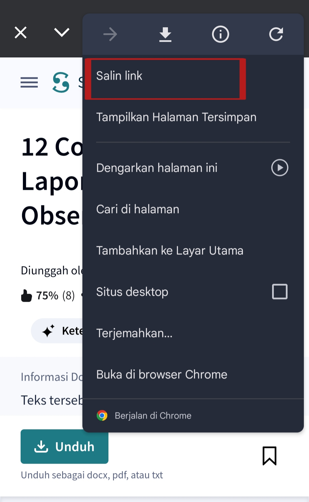

Bantuan & Panduan
Temukan panduan cara menyalin tautan dokumen dan jawaban atas pertanyaan umum.
Cara Menyalin URL Dokumen dari Scribd
Jika Anda mengakses Scribd melalui browser ponsel atau komputer, ikuti 2 langkah mudah berikut untuk mendapatkan tautan dokumen:
Langkah 1: Tekan Titik Tiga
Pada halaman dokumen di browser Chrome/Safari Anda, tekan menu titik tiga di pojok kanan atas.

Langkah 2: Pilih Salin Link
Pilih opsi menu "Salin link" atau ikon rantai untuk menyalin URL ke papan klip.

Pertanyaan yang Sering Diajukan (FAQ)
Ya, ScribdAccess sepenuhnya gratis digunakan tanpa biaya pendaftaran, tanpa kartu kredit, dan tanpa masa percobaan berbayar.
ScribdAccess mendukung semua bentuk URL dokumen Scribd resmi (misalnya scribd.com/document/123456/..., scribd.com/doc/123456/..., link embed, maupun Anda bisa langsung memasukkan nomor ID dokumen saja).
Pastikan tautan yang Anda masukkan benar-benar berasal dari dokumen Scribd dan mengandung angka ID dokumen. Tautan ke halaman beranda atau hasil pencarian tanpa ID dokumen tidak dapat diproses.
Beberapa dokumen mungkin telah dihapus oleh pemiliknya dari Scribd atau memiliki pengaturan privasi tertutup oleh penerbit aslinya. Selain itu, pastikan pemblokir pop-up di peramban Anda tidak memblokir pembukaan tab baru.
Versi 2.0 hadir dengan antarmuka Neo-Memphis yang lebih segar, animasi status loading, dan tombol Paste modern. Versi Klasik (v1) tetap dipertahankan untuk pengguna yang menyukai tampilan minimalis retro.